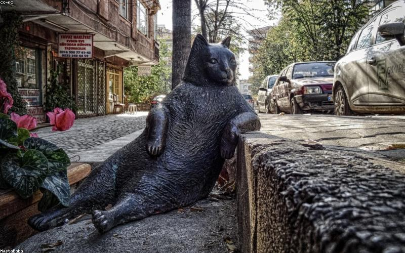
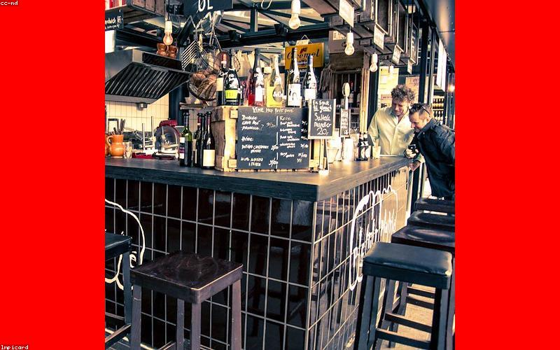
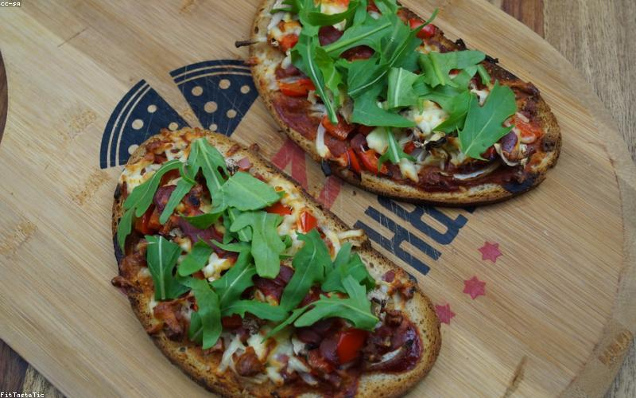
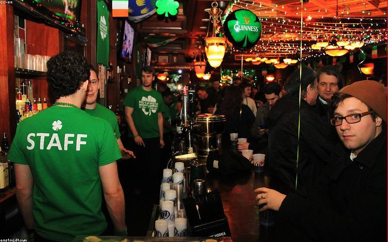
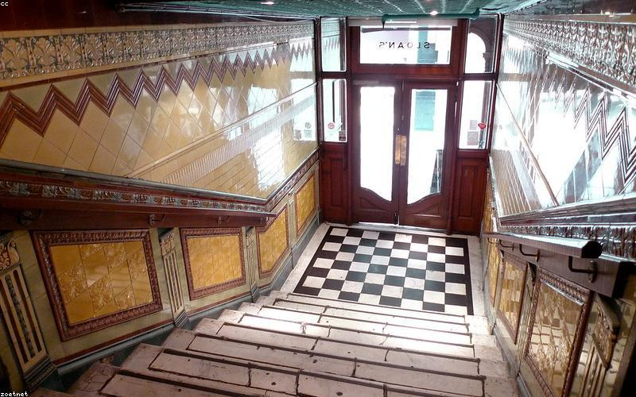
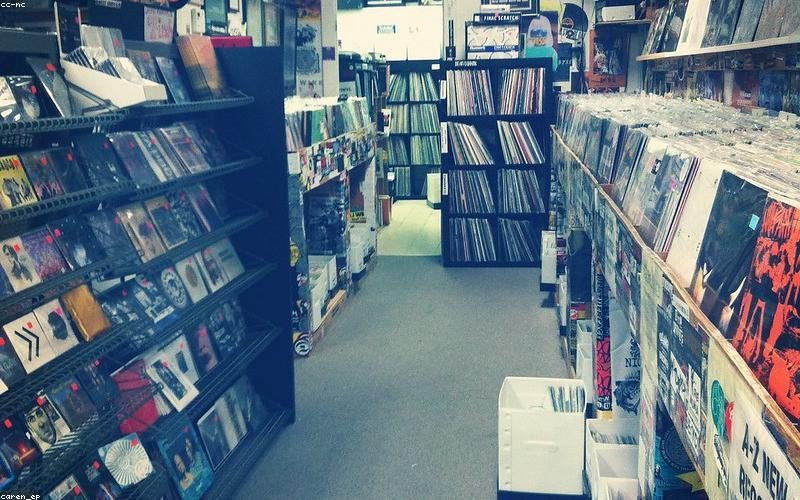
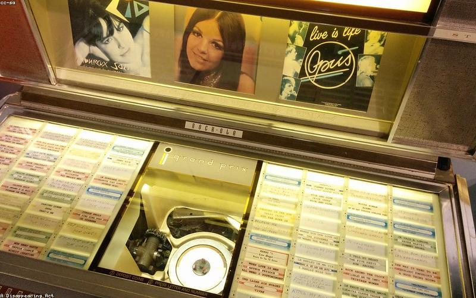
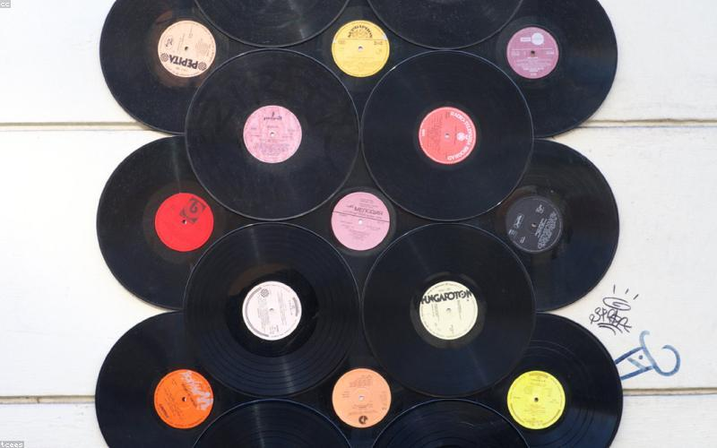
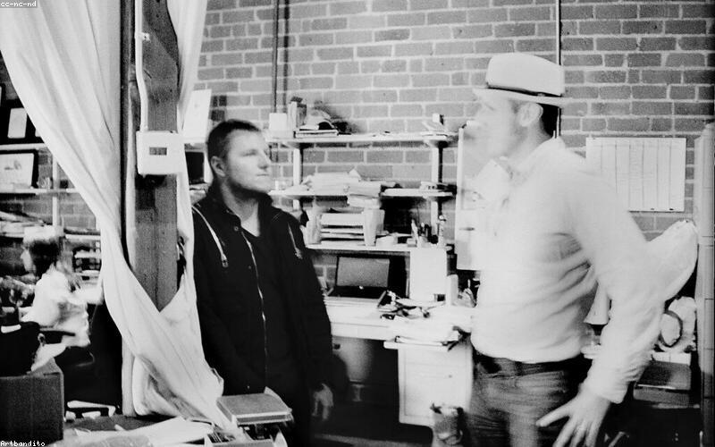
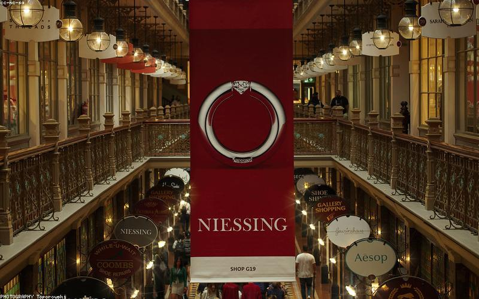

Places
Where to go,
what to do
Coffee
3fe Aungier Street
Aungier Street
The most accessible 3fe for the city centre circuit — walk from George's Street Arcade in five minutes. Same quality as Grand Canal Street; bigger room, good for working. The Aungier Street axis is becoming one of the better specialty coffee concentrations in Dublin.
↗ MAPS

Coffee · Sit-Down
Kaph
Drury Street
Specialty café right in the Creative Quarter's main strip. Nordic-influenced aesthetics, good filter and espresso, a room that rewards sitting in. One of the early Dublin cafés to take interior design as seriously as the coffee — the two things going together set it apart when it opened and still do. Drury Street's best option for a longer sit.
↗ MAPS

Food Hall
Fallon & Byrne
Exchequer Street
The best food hall in Dublin's city centre — a wine merchant, deli counter, and brasserie under one roof. The ground floor is the main event: artisan Irish produce, a proper cheese counter, good bread, prepared foods. The wine selection downstairs is serious. Good for picking up something to take away or for a sit-down lunch upstairs. One of the few city-centre stops that rewards time rather than just filling a gap.
↗ MAPS

Food · Quick
Honest to Goodness
Georges Street area
If you need something quick and good in the Creative Quarter, this is the cleanest option. Salads, wraps, wholesome fast food that actually uses real ingredients. The speed and quality combination is rare in the city centre, where most quick options are chains.
↗ MAPS

Food · Lunch Only
Assassination Custard
Kevin Street / near Creative Quarter
Lunch-only, tiny, extraordinary. One of Dublin's most interesting small restaurants — a rotating menu of small plates influenced by wherever the chef has been reading lately. Natural wine. Queues possible. Worth it.
↗ MAPS

Bar · Institution
Mulligan's
Poolbeg Street
Widely considered to pour the best Guinness in Dublin. An institution that's been in operation since 1782. Old-school in the best sense — no craft beer list, no cocktails, no ambient music you didn't ask for. Journalists from the adjacent Irish Times have been drinking here for a century. Go for the Guinness. Go once properly.
↗ MAPS

Bar · Architecture
The Long Hall
South Great George's Street
The most beautiful pub interior in Dublin — Victorian mirrors, mahogany bar, original gas fittings. Listed as a protected structure. The Long Hall is one of those pubs where the architecture is the point; the Guinness is good but you're really going to see what a 19th-century Dublin pub looked like without any concession to modernity. Genuinely stunning room.
↗ MAPS

Records · Essential
Road Records
Fade Street
The best record shop in Dublin. Specialist in indie, post-punk, experimental, and electronic — the kind of shop where the selection reflects actual listening rather than a sales algorithm. Strong import stock, good Irish releases, staff who know their catalogue. If you're looking for Japanese city pop or obscure jazz, this is the first call. Also strong on new releases across independent labels.
↗ MAPS

Records
Tower Records
Wicklow Street
Dublin's largest record shop — broader, less curated, but useful for coverage and for finding mainstream catalogue cheaply. Where Road Records has depth in independent music, Tower has breadth. Worth a visit for the jazz and classical sections, which are better than most stores of this type. Also carries DVDs, music books, and merchandise.
↗ MAPS

Records
Freebird Records
Grafton Street area
Long-running independent with a more eclectic selection than Road Records — folk, country, world music, and Irish traditional alongside the rock and pop. Good for finding things you weren't looking for. One of the Dublin record shops where browsing is the point.
↗ MAPS

Menswear
Article Dublin
Drury Street
Dublin's best independent menswear boutique — Norse Projects, Edwin, Corridor, Gramicci, Pas Normal Studios. The kind of shop that makes you realise Dublin can dress well when it chooses to. Not Y-3 territory but the curated quality-menswear aesthetic overlaps significantly. Worth visiting even if you're not buying.
↗ MAPS

Market · 1881
George's Street Arcade
South Great George's Street
Ireland's oldest shopping centre, still operating as intended. Not a mall — a covered Victorian market with independent traders. The vinyl stalls (Funky Beats Records inside) are the highlight for music. Also vintage clothing, a chip shop that has been there forever, and the atmosphere of a place that existed before retail meant chains. Half an hour browsing the arcade is one of the better ways to spend time in Dublin's city centre.
↗ MAPS